VLS 全解析
Vision-Language Steering:训练-free 推理时引导,解决 VLA policy 的分布外(OOD)问题。背景 · 创新 · 代码 · 部署 · 评测结果一站式。
1. 背景与意义
VLA(Vision-Language-Action)policy 如 π-0.5 在训练分布内表现优异,但部署到真实世界会遇到分布外(OOD)问题:物体被挪了位置、任务指令变了、场景换了。此时 policy 会依赖训练时学到的"捷径先验",做出错误动作。
传统做法是收集 OOD 数据微调,成本高且无法穷举。VLS 提出一条训练-free路线:冻结 policy,在它生成动作的过程中用 VLM 的语义理解实时"掰方向"。
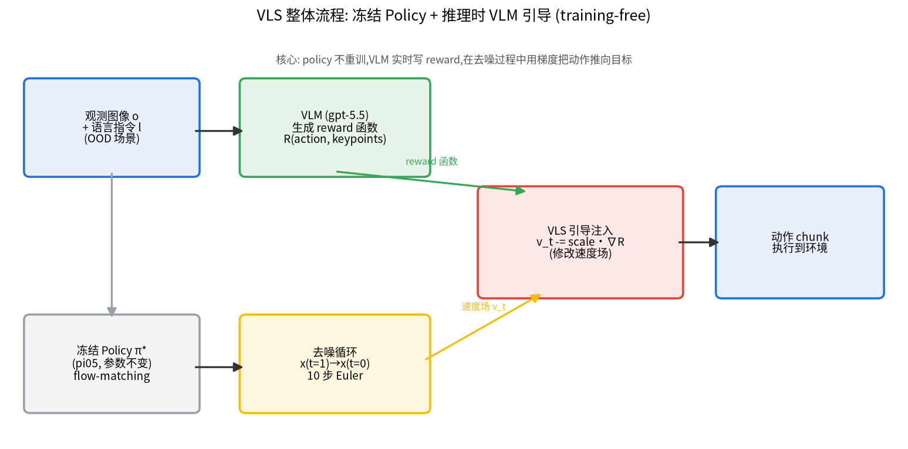
2. 创新方案
VLS = Vision-Language Steering。一句话:冻结的 policy 照常生成动作,VLS 在它"去噪生成动作"的过程中插一脚,用 VLM 写的 reward 把动作往正确方向推。
2.1 切入点:Flow Matching 的速度场
π-0.5 用 flow matching 生成动作:从噪声出发,沿"速度场 v_t"积分 10 步到干净动作。VLS 的干预就是在这个去噪循环里修改速度场。
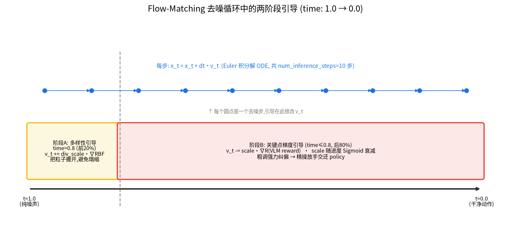
2.2 两阶段引导
- 早期(撒开):RBF kernel 多样性梯度把并行粒子互相推开,保证探索。
- 后期(纠偏,核心):用 VLM 生成的 reward 函数对动作求梯度,
v_t -= scale * kp_grad,把速度场掰向 reward 上升方向。这是 classifier guidance 思想,创新在于打分器由 VLM 实时生成、适配 OOD。
2.3 Sigmoid 自适应强度
引导强度随"离目标多近"自适应:远时全力推,近时放手,把精细抓取交还 policy。
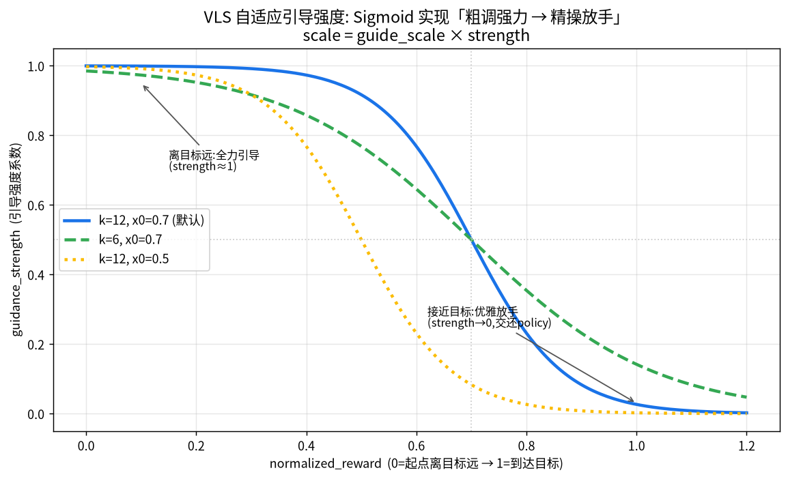
2.4 FKD 粒子重采样(互补)
梯度引导负责"推"(需 reward 可微),FKD 用 Feynman-Kac 权重做粒子"优胜劣汰"(不需可微)。
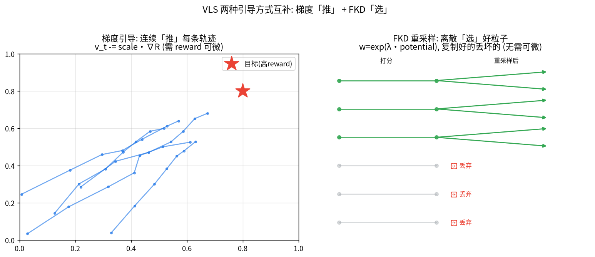
3. 代码细节
核心代码在 core/pi05_steer.py 的 _sample_actions_guided。去噪循环:
noise = self.model.sample_noise(actions_shape, device) # 从纯噪声开始
dt = torch.tensor(-1.0 / num_steps) # 负步长
x_t = noise; time = torch.tensor(1.0) # t=1(噪声)→ t=0(动作)
while time >= -dt / 2:
v_t = self.model.denoise_step(..., x_t=x_t, timestep=expanded_time) # 预测速度场
# 后期:用 VLM reward 梯度掰速度场
kp_grad, reward = self._compute_keypoint_gradient(x_t, keypoints, guidance_fn, ...)
normalized_reward = 1 - (reward / self._stage_init_reward)
guidance_strength = 1/(1+np.exp(sigmoid_k*(normalized_reward - sigmoid_x0)))
scale = guide_scale * guidance_strength
v_t[..., :3] -= scale * kp_grad[..., :3] # 注入引导
x_t = x_t + dt * v_t # 欧拉法解 ODE
time = time + dt3.1 reward 是怎么写的?梯度怎么从 reward 传到动作?
这是 VLS 最核心的一环。上面只写了"用 reward 梯度掰速度场",这里讲清 reward 函数长什么样、loss/梯度怎么反传。
① reward 不是一个数值,是 VLM 现场写的一段 Python 函数
每个 episode 开始,VLM(gpt-5.5)会看 agentview 图像 + 读任务指令,直接生成一段 Python 代码 —— 一个 stageN_guidance(keypoints, action_sequence) 函数。下面是一次真实运行中 VLM 为"抓取奶油奶酪"生成的 reward 函数(原样,来自 outputs/.../vlm_agent/stage1_guidance.txt):
def stage1_guidance(keypoints, action_sequence):
# Guide the gripper to the cream cheese at keypoint 8.
# 从上往下抓:X-Y 对齐比 Z 更重要,给更大权重
T = action_sequence.shape[1]
timesteps = torch.arange(T, device=action_sequence.device)
final_start = int(0.7 * T)
# 轨迹后段(接近抓取)权重更高
weights = torch.where(timesteps >= final_start, 3.0, 1.0)
weights = weights / weights.sum()
# VLM 看图后硬编码:目标是 8 号关键点(奶油奶酪)
target_idx = torch.tensor([8], device=keypoints.device)
target_pos = keypoints[target_idx][0]
# reward = 负的"轨迹到目标关键点的加权距离平方"
xy_dist = torch.norm(action_sequence[..., :2] - target_pos[:2], dim=-1)
z_dist = torch.abs(action_sequence[..., 2] - target_pos[2])
weighted_dist_sq = 3.0 * (xy_dist ** 2) + (z_dist ** 2)
reward = -(weighted_dist_sq * weights).sum(dim=1)
return reward.mean()② 关键点从哪来?
keypoints 是场景里候选物体的 3D 坐标:SAM 分割出物体 → DINOv2/v3 提特征 → kmeans 聚类出若干候选关键点,每个标一个编号叠在图上给 VLM 看。VLM 的工作就是从这些编号里用眼睛挑出目标物体对应的那个。
③ loss/梯度怎么传:reward 对动作直接求导
reward 是纯 torch 运算、可微。VLS 把当前去噪中的动作设为可求导,让 reward 对它求梯度(core/pi05_steer.py: _compute_keypoint_gradient):
with torch.enable_grad():
sample_grad = sample.detach().requires_grad_(True) # 让动作可求导
traj = self._sample_to_trajectory_3d(sample_grad)[..., :3] # 动作→3D轨迹
reward = guidance_fn(keypoints_tensor, traj) # 调 VLM 写的 reward
grad = torch.autograd.grad(reward, sample_grad)[0] # reward 对动作求梯度
normalized_grad = grad / (grad.norm() + 1e-8) # 归一化autograd.grad,拿到"动作往哪个方向调能让 reward 上升"的梯度,然后把这个梯度(乘自适应 scale)加到 flow matching 的速度场上:v_t[...,:3] -= scale · normalized_grad。模型权重全程不更新,只调正在生成的这条动作。④ 完整链路一句话串起来
VLM 看图+读指令 → 写出 reward 函数(硬编码目标关键点)
→ reward = −距离(动作, 目标关键点)
→ autograd.grad(reward, 动作) 得梯度
→ 梯度 × 自适应scale 注入去噪速度场
→ 动作被"推"向目标物体 → 纠正 OOD 下的错误3.2 两个 VLM 调用点(关键:用不同的 key)
| 用途 | 代码 | 用哪个 key | 状态 |
|---|---|---|---|
| guidance/reward 生成 | vlm_query/vlm_agent.py | codex(OpenAI 兼容) | ✅ 正常 |
| stage recognition | core/gemini_grounder.py | Google Gemini SDK | ❌ 无 key,已关 |
gemini_grounder.py 里 import google.generativeai 只认 Google key 与端点,塞 codex key 会认证失败。两者不同厂商、不同协议。我们只有 codex key,所以 stage recognition 被关闭(影响见第 7 节)。4. 部署记录
conda env vls / torch 2.7.1+cu118 / transformers 4.53.3(lerobot fork) / numpy 1.26.4。用途:部署验证 + 小样本 smoke。
装在 czy 共享盘。仅内网:公网走 proxychains4,HF/GitHub 不通用离线模式 + 本机 scp/rsync。用途:8 卡并行全量评测。
4.1 部署踩坑(举一反三)
| 坑 | 根因 | 规律 |
|---|---|---|
| libero import 失败 | 嵌套包未注册 | 嵌套 submodule 用 .pth 注册路径 |
| mujoco EGL 报错 | PyOpenGL 3.1.0 太旧 | EGL 渲染需 ≥3.1.10 |
| DINOv3 加载失败 | HF 不通且未缓存 | 离线环境确认实际生效的 backbone |
| 8 进程视频混写 | hydra 秒级时间戳撞车 | 并行跑同程序注入唯一输出目录 |
| log 暴涨到 5.7G | 每步 httpx 请求都打 INFO | 调 API 的长任务把 httpx 日志压到 WARNING |
5. 数据集与评测设定
看结果前先搞懂:我们在测什么、swap/task 是什么、为什么这些数字能验证 VLS。
5.1 LIBERO —— 原始机器人操作基准
LIBERO 是机器人桌面操作的仿真基准(MuJoCo/robosuite)。给一句语言指令(如"打开中间的抽屉"),机器人执行动作,成功率 = 完成的 episode 比例。它有 4 个 task suite,各考察一种能力:
| suite | 含义 | 例子 |
|---|---|---|
| Goal | 同物体,不同目标 | "打开抽屉" vs "关抽屉" |
| Spatial | 同物体,不同空间摆放 | 碗在盘子左边 / 右边 |
| Object | 不同物体 | 拿番茄汤 / 拿字母汤 |
| 10 (Long) | 长程任务,多步骤串联 | 一连串子任务,步数最多 |
每 suite 10 个 task × 每 task 20 episode = 每 suite 200 episode(这就是 n=200 的来历)。
5.1.1 每个 suite 具体是哪 10 个任务(从 bddl 提取)
不能只说 Object/Goal。下面是每个 suite 的真实任务指令,任务结构直接决定 VLS 是否有效:
pick up the [alphabet soup / bbq sauce / butter / chocolate pudding / cream cheese / ketchup / milk / orange juice / salad dressing / tomato sauce] and place it in the basket
pick up the black bowl [between the plate and ramekin / from table center / in the top drawer / next to cookie box / next to plate / next to ramekin / on cookie box / on ramekin / on stove / on wooden cabinet] and place it on the plate
1. open the middle drawer(抓把手→拉开,多阶段)
2. open the top drawer and put the bowl inside(多阶段)
3. push the plate to front of stove
4-6. put the bowl on plate / stove / cabinet
7. put cream cheese in bowl
8-9. put wine bottle on rack / cabinet
10. turn on the stove
1. turn on stove + put moka pot on it
2. put bowl in drawer + close it
3. put mug in microwave + close it
4. put both moka pots on stove
5-7. put both [两种食物] in basket
8-9. 双杯分别放左右盘 + 布丁
10. pick book + place in caddy compartment
| suite | 任务结构 | 对 VLS 的意义 |
|---|---|---|
| Object | 单阶段抓放,只换物体 | ✅ VLS 最擅长(引导目标单一) |
| Spatial | 单阶段抓放,只换位置 | ✅ 理论适合(我因 kmeans bug 未测到) |
| Goal | 多样,含多阶段(开抽屉) | ⚠️ 多阶段需 stage 切换 |
| 10/Long | 全多步骤串联 | ❌ 长程,VLS 能力边界 |
5.2 问题:VLA 在原始 LIBERO 上"作弊"
5.3 LIBERO-PRO —— 加扰动测真泛化(我们用的就是它)
在原始任务上施加 5 种扰动,专门戳破"记忆"、逼出真实的分布外(OOD)能力:
| 扰动 | 我的标签 | 改了什么 | 例子 |
|---|---|---|---|
| Position | _swap | 把物体挪到别的合理位置(指令不变) | 换 cup 和 bowl 的位置 |
| Object | _object | 改物体外观/颜色/大小 | "红杯"→"黄杯" |
| Semantic | _lan | 换说法表达同一指令 | "grasp the mug"→"pick up the cup" |
| Task | _task | 改任务逻辑/目标(指令彻底变) | "拿杯子"→"拿黄油" |
| Environment | _env | 换工作场景 | 主桌→厨房桌 |
5.3.1 我们用的两种扰动,到底改了什么?(看代码搞懂)
机制(
perturbation.py: SwapPerturbator):在 BDDL 初始状态里,把关注物体 A 和另一物体 B 的 (On A 区域a) / (On B 区域b) 对调成 (On A 区域b) / (On B 区域a)。举例(Spatial suite):原任务"pick up the black bowl next to the plate and place it on the plate"。原本黑碗在盘子旁、饼干盒在别处;swap 后把黑碗和饼干盒的位置对调 —— 现在盘子旁边是饼干盒,黑碗跑到别处去了。指令没变,还是"拿盘子旁边的黑碗",但盘子旁边已经不是黑碗了。
为什么能测 OOD:如果 policy 是死记"移动到某个固定坐标去抓",它就会抓向旧位置(现在那儿是别的物体)→ 失败。真正理解任务的 policy 才会去找"黑碗现在在哪"。
机制(
perturbation.py: TaskPerturbator):同时替换 BDDL 里的 (:language)(语言指令)+ (:goal)(目标完成状态)+ (:obj_of_interest)(关注物体)。举例(Object suite):原任务"pick up the alphabet soup and place it in the basket",桌上摆着同一批食物;task 扰动后指令变成"pick up the butter..." —— 场景物体没动,但要抓的目标从字母汤换成了黄油。
为什么能测 OOD:policy 不能靠"这个场景我见过、闭眼执行老动作",必须真的读懂新指令去抓新目标。这是最难的 OOD(论文里所有模型几乎都掉到 0-1%)。
5.4 为什么这能验证 VLS?
VLS 的卖点是「训练-free 推理时引导解决 OOD」。验证逻辑是一条清晰的对照链:
原始任务(90%+) ──加扰动──▶ baseline 崩溃(Object-swap 14%) ──加VLS引导──▶ 救回(36%)
↑ 这就是 OOD ↑ 这就是 VLS 的价值- baseline 在扰动下的低分(swap 14% / task 12%)= OOD 问题真实存在的证据
- VLS 相对 baseline 的提升(swap 14→36%)= VLS 确实在纠正 OOD,而非碰运气
- 用 4 suite × 2 种扰动 交叉测,能看出 VLS 在哪类 OOD 有效、哪类失效
6. 评测结果
评测基准:LIBERO-PRO,4 suite(Goal/Spatial/10/Object)× 两种 OOD(Position/swap、Task)。Policy:π-0.5 LeRobot 作者权重。VLM guidance backend:codex gpt-5.5,stage recognition 关闭(无 Gemini key)。每 suite 200 episode。
6.0 📊 完整结论总表(先看这张)
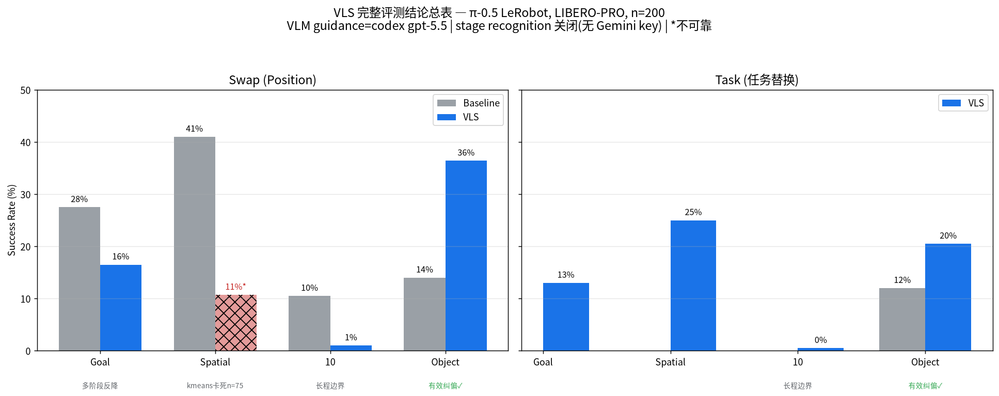
6.0.1 符合性对比:我的结果 vs 论文
π-0.5 LeRobot,n=200。论文值取自 VLS 论文 Table I / LIBERO-PRO leaderboard。
Position(swap)扰动:
| suite | 论文 base→VLS | 我的 base→VLS | 符合? | 说明 |
|---|---|---|---|---|
| Object | 16%→45% | 14%→36.4% | ✅ 符合 | 趋势+量级一致,单阶段抓放最适合 VLS |
| Goal | 有提升 | 27.5%→16.5% | ❌ 反降 | 多阶段(开抽屉)缺 stage rec.,VLS 卡错阶段 |
| Spatial | 41%→42% | 41%→10.7%(n=75) | ⚠️ 不可靠 | kmeans NaN 死循环卡死,样本不足 |
| 10 | 11%→15.5% | 10.5%→1.0% | ❌ 偏低 | 长程任务,引导难救多步序列 |
Task 扰动:
| suite | 论文 base→VLS | 我的 base→VLS | 符合? | 说明 |
|---|---|---|---|---|
| Object | 10.5%→41% | 12%→20.5% | ⚠️ 方向对 | 提升到一半,因关 stage rec.(task 多为多阶段) |
| Spatial | — | →25.0% | — | 仅我方数据 |
| Goal | — | →13.0% | — | 多阶段受限 |
| 10 | — | →0.5% | — | 长程边界 |
5.1 🖥️ 本机 object 四种 OOD(n=10)
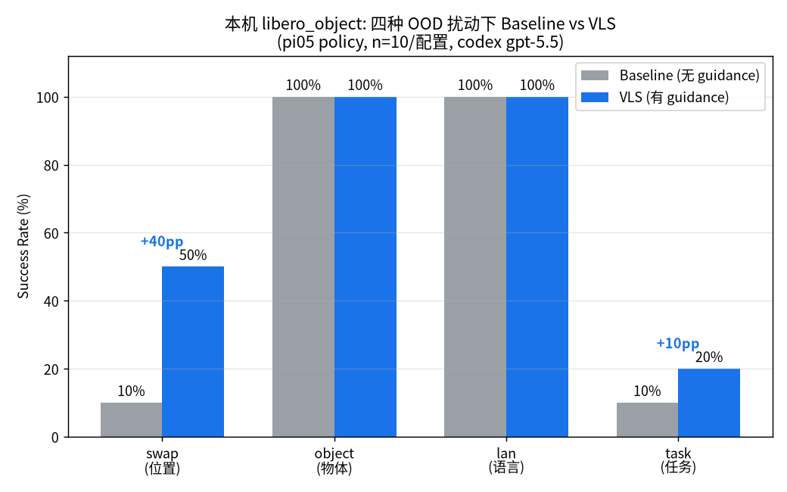
5.2 🌐 开发机 Swap 全量(n=200,最终数据)
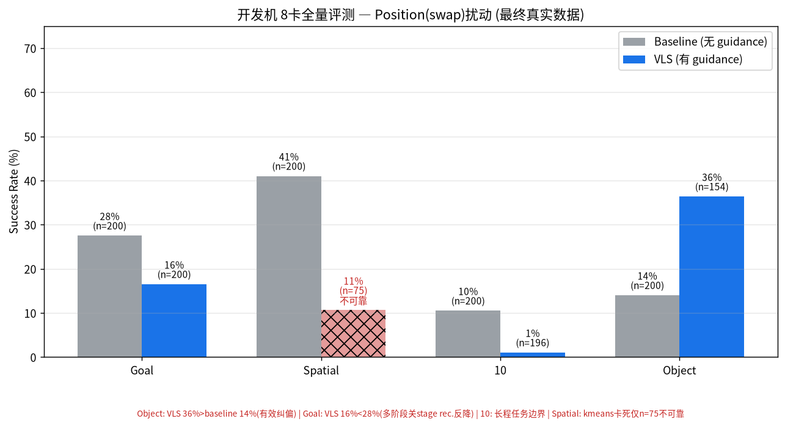
5.3 🌐 开发机 Task 扰动(方案 A,n=200 完成)
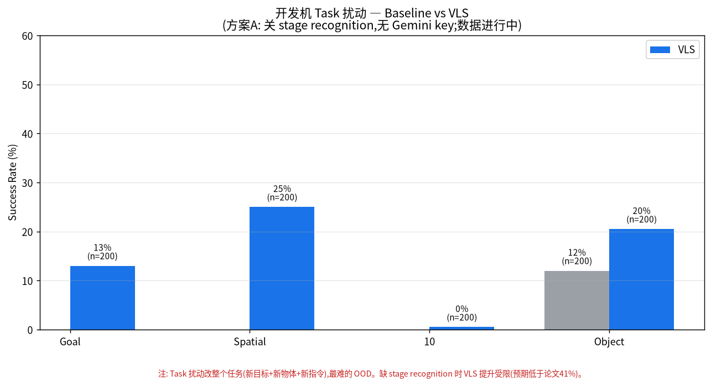
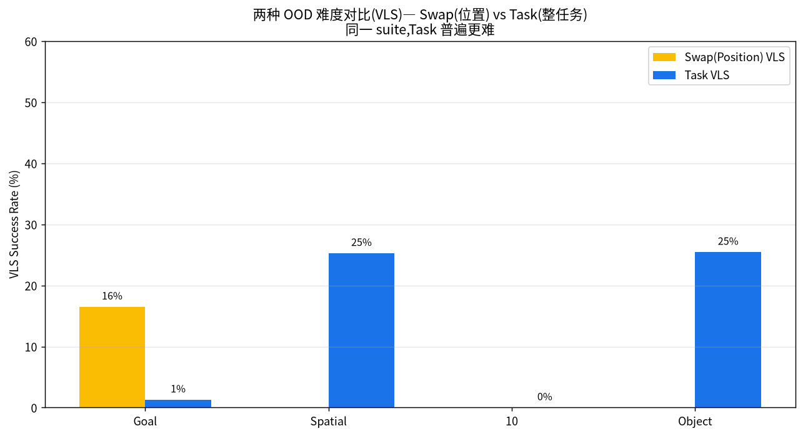
6.4 📹 实验结果视频画廊(成功 / 失败,真实 rollout)
每个 rollout 评测时都会存一段视频,开发机已累积近千段。下面按 suite 分组展示成功(绿框)与失败(红框)的真实案例。绿框=VLS 完成任务,红框=超时/抓错失败。
① Position(swap)扰动:baseline vs VLS 同任务对比
最直观的证据:同一个被挪了位置的任务,baseline 抓向旧位置失败,VLS 被 VLM reward 拉向新位置成功。
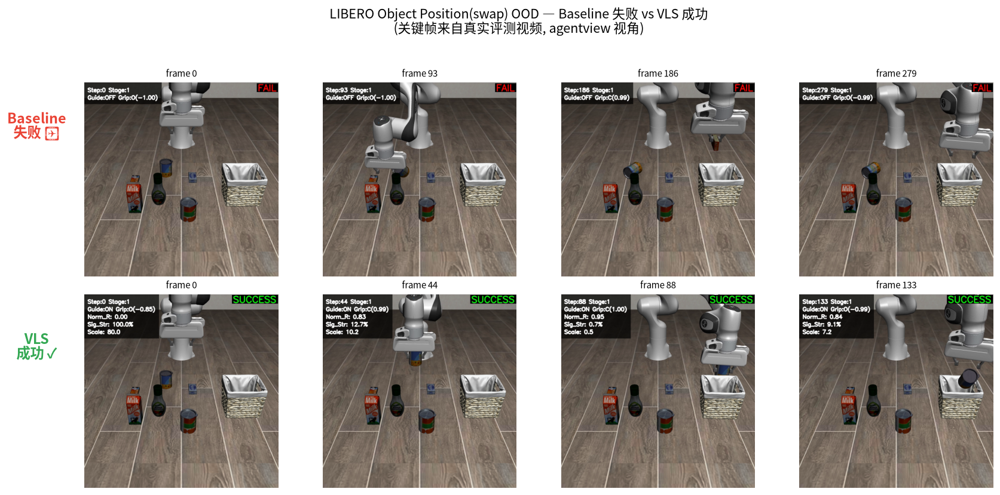
② Object-Task 扰动(单阶段抓放,VLS 最擅长)
任务:桌上摆着一排食物(字母汤/黄油/番茄酱/牛奶…),指令形如"pick up the X and place it in the basket"。task 扰动把要抓的目标 X 换成另一个物体(如 字母汤→黄油),场景不变但目标变了。VLS 20.5% > baseline 12.0%,下面 3 成功 + 3 失败 + 1 组同任务对照。
③ Spatial-Task 扰动(单阶段抓放,只换空间关系)
任务:指令形如"pick up the black bowl [在某处] and place it on the plate",10 个任务是黑碗放在不同位置(桌心/抽屉里/炉子上/饼干盒旁…)。VLS 25.0%,是 task 扰动里表现最好的 suite。
④ Goal-Task 扰动(含多阶段任务,成功率低)
任务:goal suite 目标多样(开抽屉、把碗放到盘子/炉子/柜顶、开灯…),其中"open the middle drawer"这类是多阶段(先抓把手→再拉开)。VLS 仅 13% —— 缺 stage recognition 时,VLS 容易卡在第一阶段的 reward 上出不来,成功案例稀少(只有 2 个)。
⑤ LIBERO10 / Long-Task 扰动(长程任务,能力边界,全失败)
任务:全是多步骤串联的长程任务(如"开炉子+把摩卡壶放上去"、"把碗放进抽屉+关上抽屉"、"把两种食物都放进篮子")。VLS 仅 0.5%,几乎无成功。长 horizon 下引导信号被稀释,VLS 救不回。下面 3 段全是失败。
6.5 📹 4 suite 视频墙(关键帧汇总)
把代表 rollout 抽帧拼成静态对比图,一屏看全 VLS 在 4 个 suite 的行为差异。
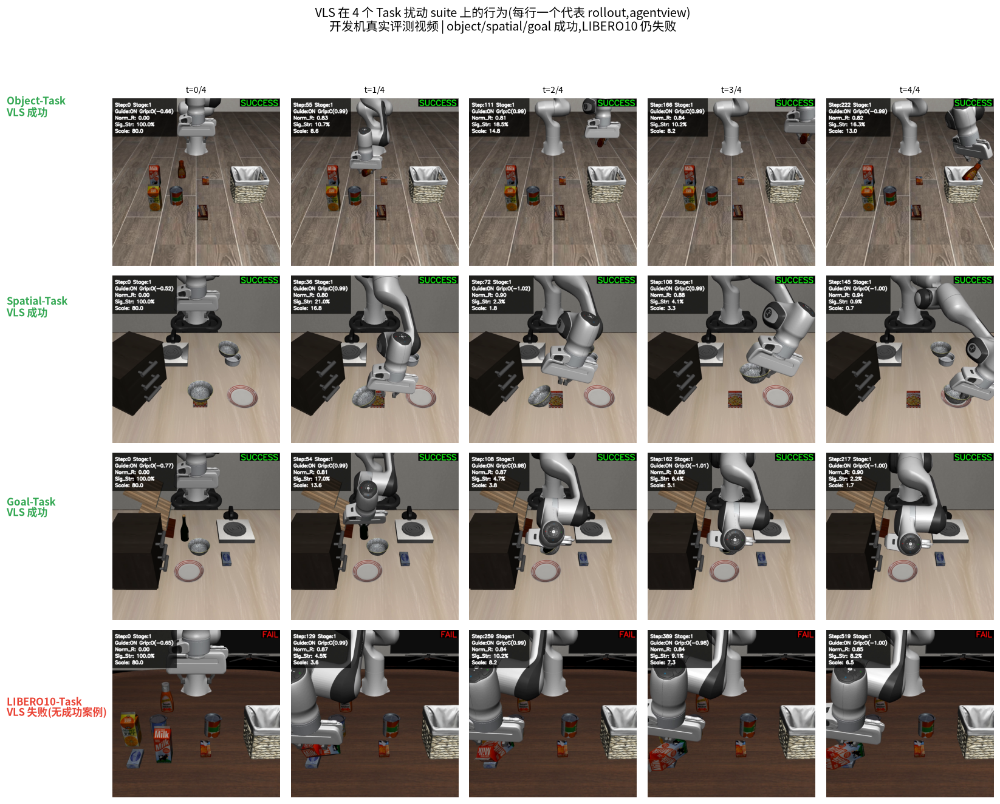
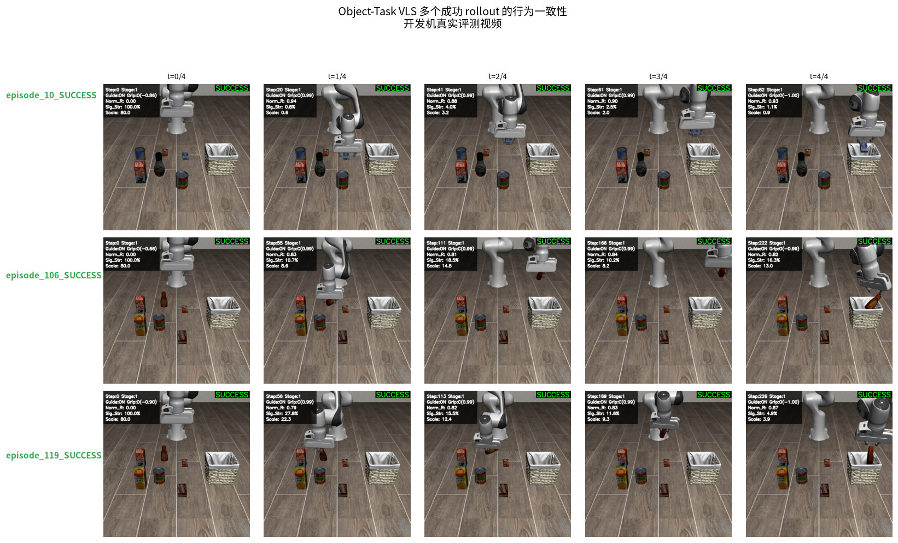
6.6 与论文对齐
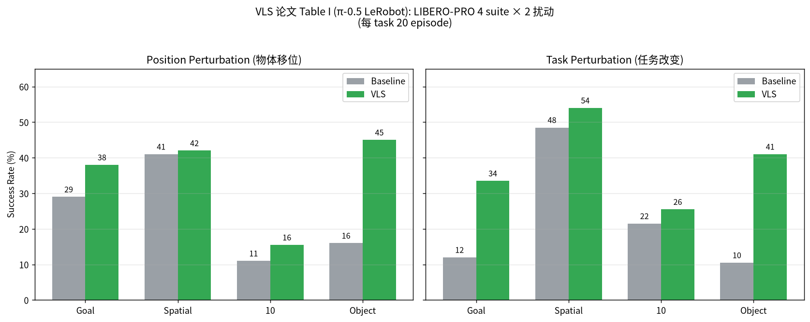
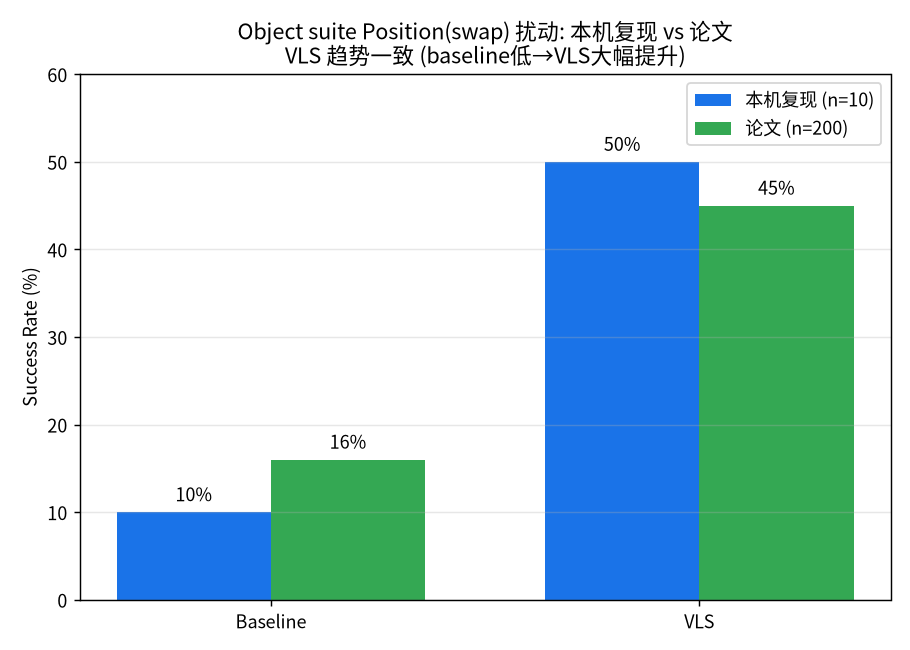
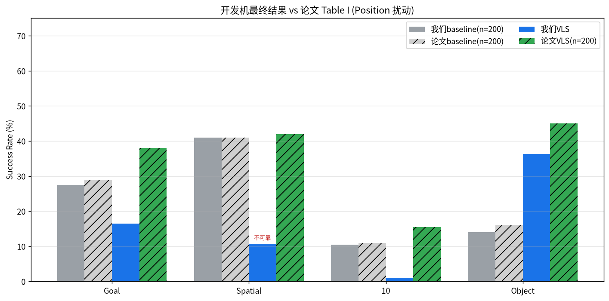
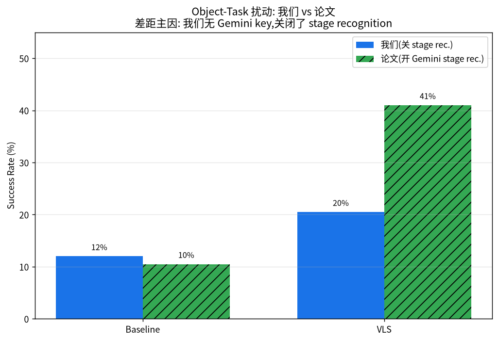
7. 关键发现
8. 结论
- 方法成立:训练-free 推理时引导能在不重训 policy 的前提下提升 Position OOD 表现,本机/开发机均复现出与论文一致的趋势。
- 有边界:多阶段任务依赖 stage recognition;长程任务(LIBERO10)仍是难点。
- 工程要点:离线部署需处理 HF/GitHub 不通(scp/rsync + 离线模式);多进程评测需隔离输出目录;长任务需压制第三方日志。
- 复现条件:完整对齐论文 Task 指标需 Google Gemini key 开启 stage recognition。
本页所有图表来自真实评测,视频为开发机真实 rollout。详细记录见仓库 midocx/vls_完整记录.md。
9. 对 Steering 课题的启示
把 VLS 复现中暴露的问题,提炼成对后续「推理时引导 / steering」课题的可操作指导。
8.1 VLS 的三个软肋 = 课题突破口
| VLS 局限 | 暴露证据 | 课题切入 |
|---|---|---|
| 依赖 stage recognition 且绑死 Gemini | goal_swap 反降 28→16% | stage 识别改走开源/自建 VLM,或用 policy 内部信号自动切 stage |
| 多阶段 reward 方向冲突 | goal 的 stage1/stage2 目标相反 | 多阶段引导的 reward 编排:自动判断当前该用哪个子目标 |
| 长程任务几乎无效 | LIBERO10 swap 1% / task 0.5% | 分层引导 / 关键步引导 / 与 replanning 结合 |
8.2 引导机制的通用洞见
8.3 做 steering 实验的方法论
- 推理时引导 = 每步调外部模型,极慢且脆弱。VLS 单 episode 慢约 10×,还因 kmeans NaN 卡死近 2 天。课题设计要预留:超时看门狗、NaN 防护、日志降噪。
- 评测要区分 OOD 类型(Position/Task/长程),不同类型对引导响应完全不同,混看平均会掩盖结论。
- 判断实验是否推进,看业务里程碑(episode 完成数),不是进程存活或 GPU 占用。这是最贵的教训(白等近 2 天)。
- 多个 LLM 调用点别假设共用一个 key,逐个确认 SDK 与凭证。